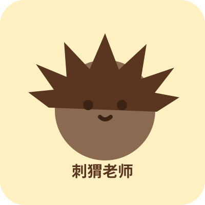

刺猬老师
喜欢记录、整理、搭小窝。把日常慢慢收进 LazyNAS。
记录 / 整理 / 慢慢生活About us
一只小刺猬，一颗小柚子，认真保存普通但发光的日子。

喜欢记录、整理、搭小窝。把日常慢慢收进 LazyNAS。
记录 / 整理 / 慢慢生活负责治愈、发光和提供小灵感。和小刺猬一起把日子过成相册。
治愈 / 灵感 / 一起发光Travel log
我们一次次出发，也一次次把日子带回来。
Little drawer
一些入口、链接和暂时藏起来的联系方式。